So geht's
Jedes Werkzeug stellt ein paar Fragen zum Anklicken und zeigt am Ende ein Ergebnis, das Sie in eine E-Mail oder in die Akte übernehmen können.
Diese Anleitung spielt alle vier Werkzeuge an einem Beispiel durch: Eine Gemeinde möchte in einer Gemeindestraße eine Fahrradstraße einrichten.
Das gilt für alle vier Werkzeuge
- Sie klicken Antworten an, getippt wird fast nichts. Mit „← Zurück“ ändern Sie eine Antwort.
- Am Ende steht ein Vermerk. Mit „Kopieren“ übernehmen Sie ihn in eine E-Mail oder in die Akte.
- Die Karte ist freiwillig. Lädt sie in Ihrem Behördennetz nicht, wählen Sie Kommune, Straße und Lage über die Listen. Die Werkzeuge funktionieren auch ohne Karte.
- Oben rechts steht der Stand des Werkzeugs. Über „← Übersicht“ kommen Sie zurück zu allen Werkzeugen.
- Die Werkzeuge sind Orientierungshilfen. Sie ersetzen nicht die Abstimmung mit den zuständigen Behörden.
Projekt-Check Radverkehr
Für den Anfang eines Vorhabens: Das Werkzeug zeigt, wer die Federführung hat, wer mit an den Tisch muss, woran zu denken ist und welche Schritte anstehen.
-
Kommune und Standort angeben – wenn Sie möchten
Wählen Sie Ihre Kommune, nennt das Ergebnis die zuständige Behörde. Über „Karte öffnen“ setzen Sie einen Punkt und klicken auf „Standort auswerten“. Das Werkzeug schlägt dann Straße, Lage, Baulast und Netzbezug aus amtlichen Geodaten vor, und Sie bestätigen.
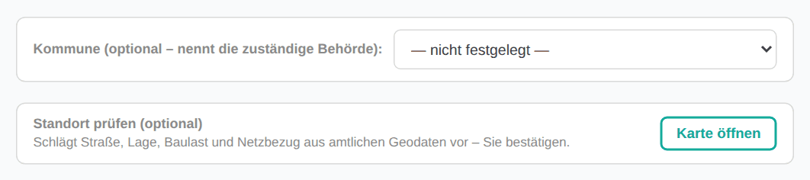
Beides ist freiwillig. Der Check funktioniert auch ohne diese Angaben. -
Vorhaben anklicken
Zur Auswahl stehen zehn typische Vorhaben, vom Radweg bis zur Kampagne. Im Beispiel: „Fahrradstraße oder -zone einrichten“.
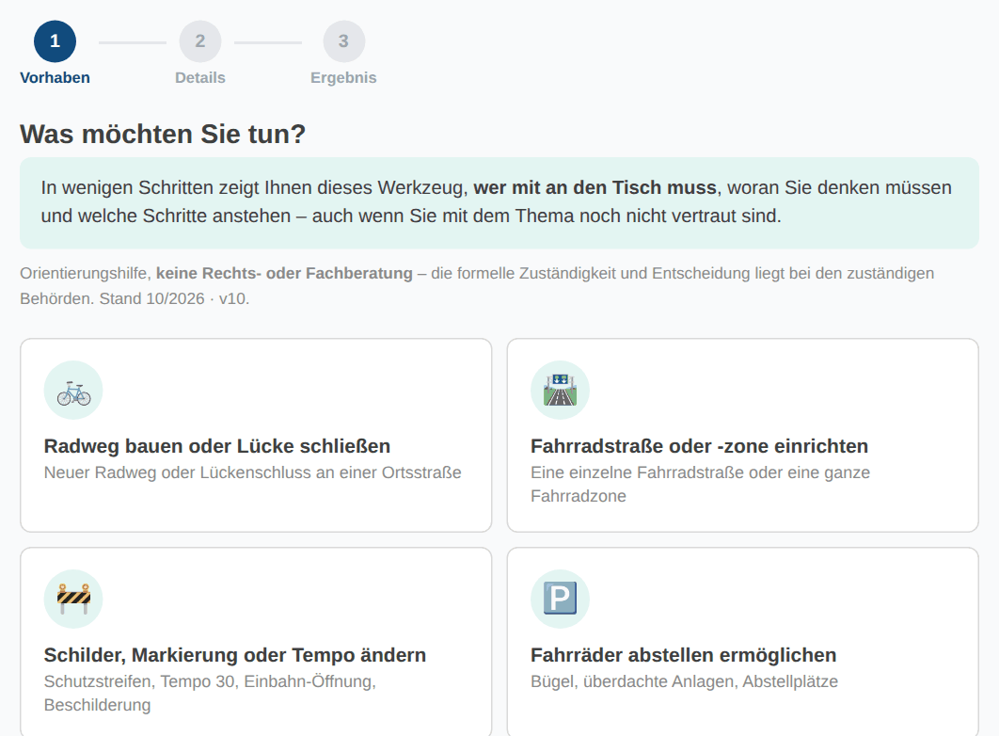
-
Ankreuzen, was zusätzlich zutrifft
Jede Angabe ergänzt, wer einzubinden ist. Mehrere Kreuze sind möglich, keines auch. Danach „Ergebnis anzeigen“. Im Beispiel: Es sollen Fördermittel eingesetzt werden.
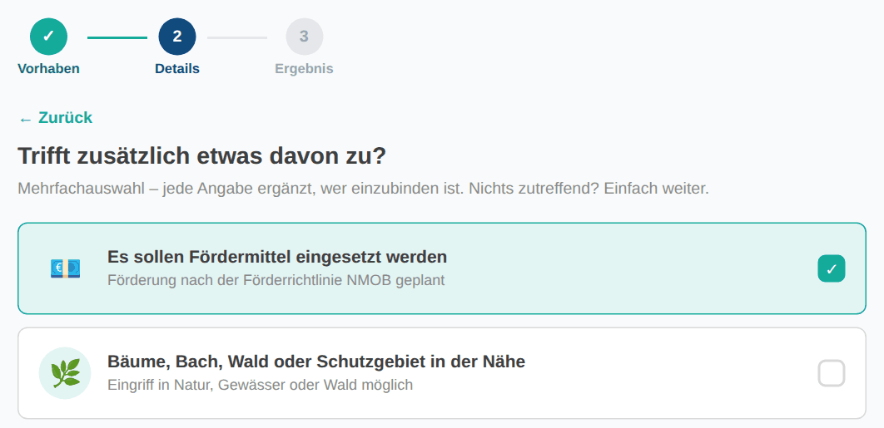
-
Ergebnis lesen
Das Ergebnis beantwortet vier Fragen: Wer hat den Hut auf? Wer sollte mit an den Tisch? Woran müssen Sie denken? Was sind die nächsten Schritte? Grün markierte Stellen sind immer dabei, blau markierte kommen wegen Ihrer Angaben dazu. Darunter erklärt „Gut zu wissen“ den rechtlichen Hintergrund.
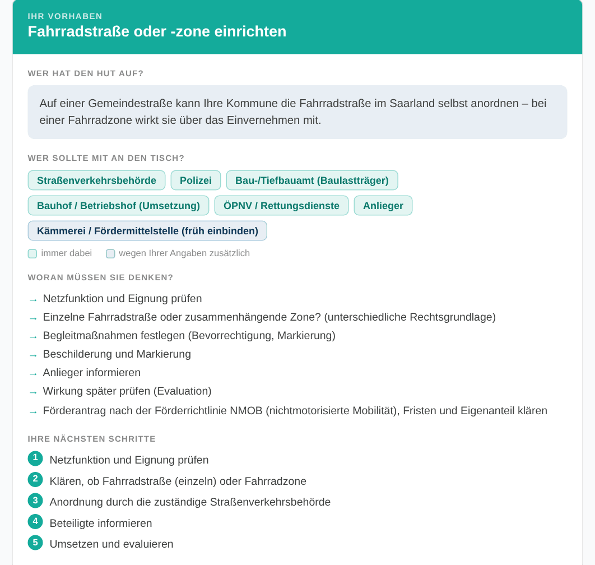
-
Vermerk kopieren
Unter dem Ergebnis steht alles noch einmal als Text. „Kopieren“ legt ihn in die Zwischenablage.
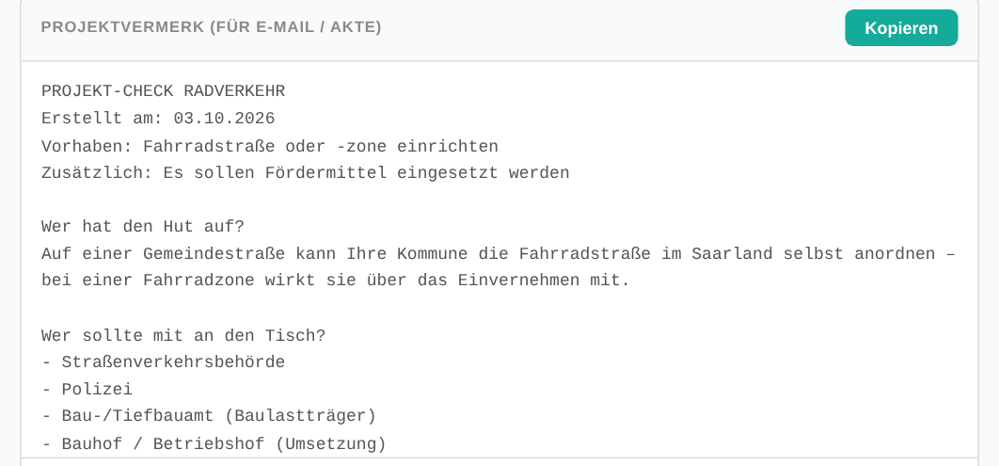


Zuständigkeiten Radverkehr
Für die genaue Rechtslage zu einer einzelnen Maßnahme: Wer ordnet an, wer trägt die Baulast, auf welche Vorschrift stützt sich das – und welche Maße gelten.
-
Maßnahme wählen
Erst die Kategorie – Markierung, Beschilderung und Anordnung oder bauliche Maßnahmen –, dann die konkrete Maßnahme. Im Beispiel: „Beschilderung & Anordnung“, dann „Fahrradstraße“.
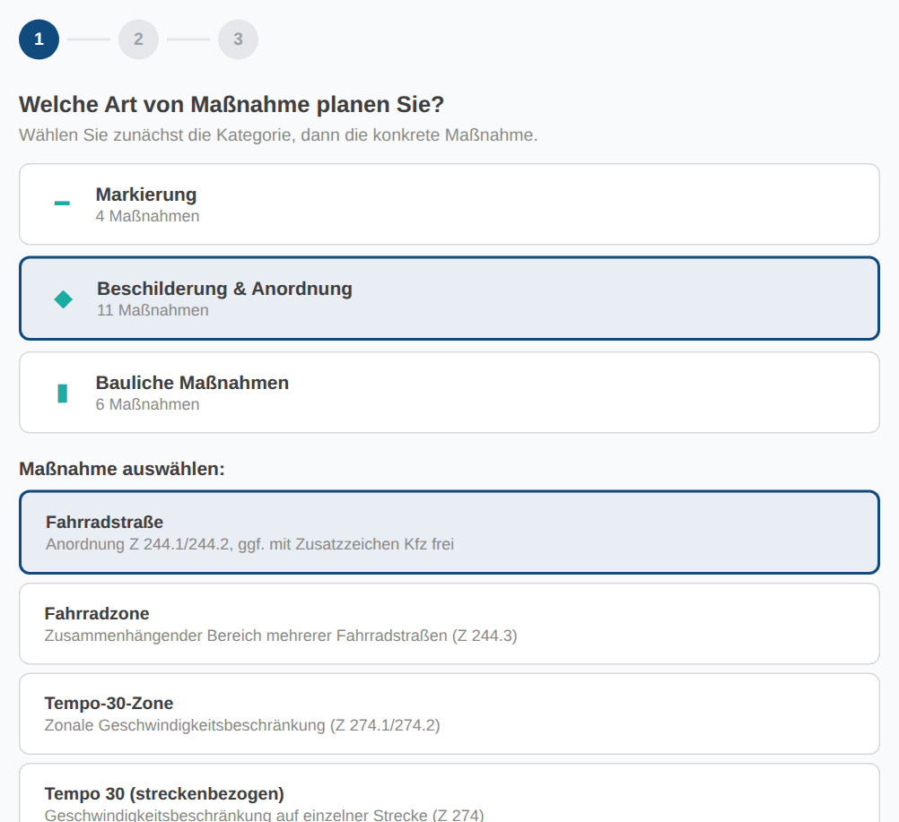
-
Straße und Lage angeben
Bundes- oder Landstraße, Gemeindestraße oder sonstige öffentliche Straße. Je nach Maßnahme fragt das Werkzeug zusätzlich, ob die Stelle innerorts oder außerorts liegt. Im Beispiel: Gemeindestraße.
Wer die Straßenklasse nicht kennt, klickt oben auf „Auf der Karte klicken“. Das Werkzeug schlägt dann Kommune, Straße, Lage und Baulast aus amtlichen Geodaten vor.
-
Ergebnis lesen
Oben steht die Behörde, die anordnet. Darunter folgen Straßenbaulastträger, Rechtsgrundlage und Aufsichtsbehörde, dann rechtliche Hinweise und Praxistipps.
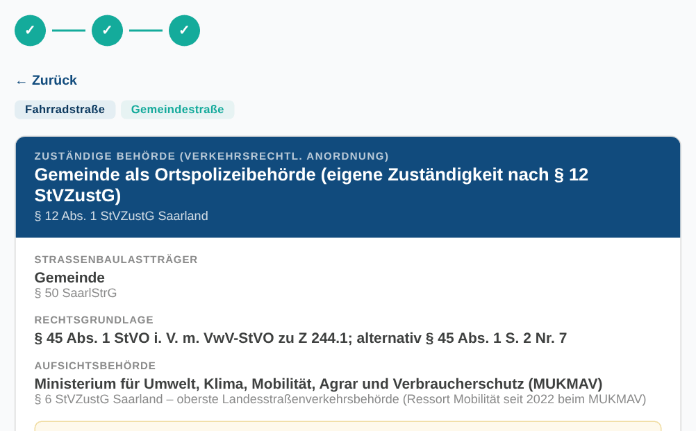
-
Bei den Maßen auf die Marke achten
Vor jedem Maß und jedem Planungshinweis steht, woher die Angabe stammt:
- GESETZStVO und VwV-StVO einschließlich der dort genannten Regelwerke. Bei Widerspruch gilt diese Ebene.
- SAARLANDLandesvorgabe des Ministeriums zum Ausbau von Radverkehrsanlagen (Stand 05/2023).
- BW · ERA-VORGRIFFMusterlösungen Baden-Württemberg. Im Saarland nicht verbindlich, fachlich aber der aktuellste Stand.
- ANDERES BUNDESLANDLeitfäden anderer Länder. Im Saarland nicht verbindlich, als Argumentationshilfe brauchbar.
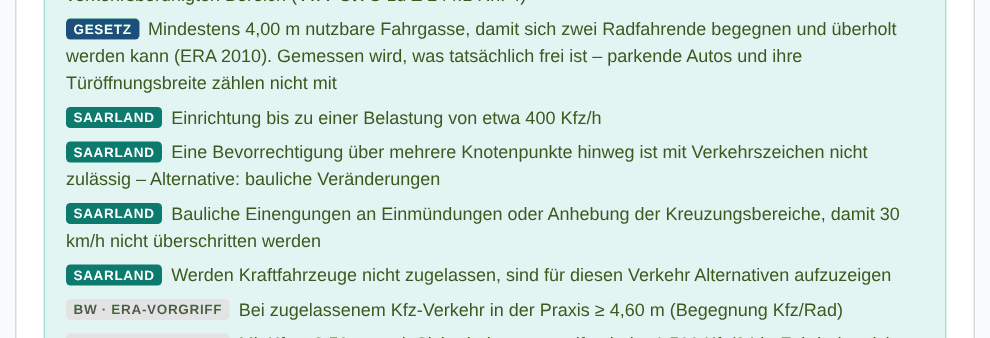
-
Vermerk kopieren
Am Ende der Seite steht der Ergebnis-Vermerk für E-Mail oder Akte.


Fördermittel-Finder
Für die Frage, ob das Land die Maßnahme fördert: Das Werkzeug zeigt Quote, Fristen und Antragsweg nach der Förderrichtlinie Rad- und Fußverkehr des Saarlandes (FRL-NMOB-Rad-Fuß). Förderprogramme des Bundes sind nicht enthalten.
-
Antragsteller wählen
Gemeinde oder Stadt, Landkreis, Schule oder Kita, gemeinnützige Organisation, Verein oder Unternehmen. Danach zeigt das Werkzeug nur, was dieser Antragsteller beantragen darf. Im Beispiel: „Gemeinde / Stadt“.
-
Bereich und Fördergegenstand wählen
Erst der Bereich, dann der Fördergegenstand mit seiner Nummer aus der Richtlinie. Danach „Ergebnis anzeigen“. Im Beispiel: „Infrastruktur & Bau“, dann „Nr. 2.1 – Infrastruktur“.
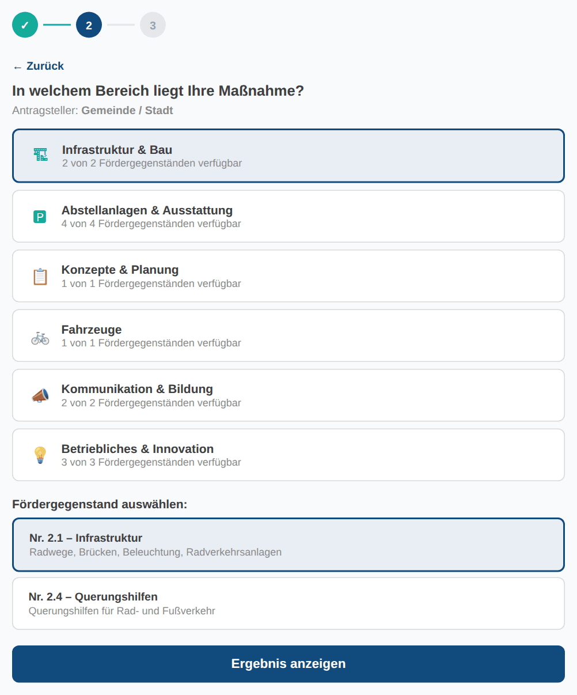
-
Ergebnis lesen
Oben stehen die Förderquoten: der Regelsatz und die höheren Sätze für finanzschwache Kommunen, bei Schul- oder Kita-Bezug und bei besonderem Landesinteresse. Darunter folgen Mindestinvestition, Zweckbindungsfrist, nächste Antragsfrist, wichtige Hinweise und die Bewilligungsbehörde mit Kontakt.
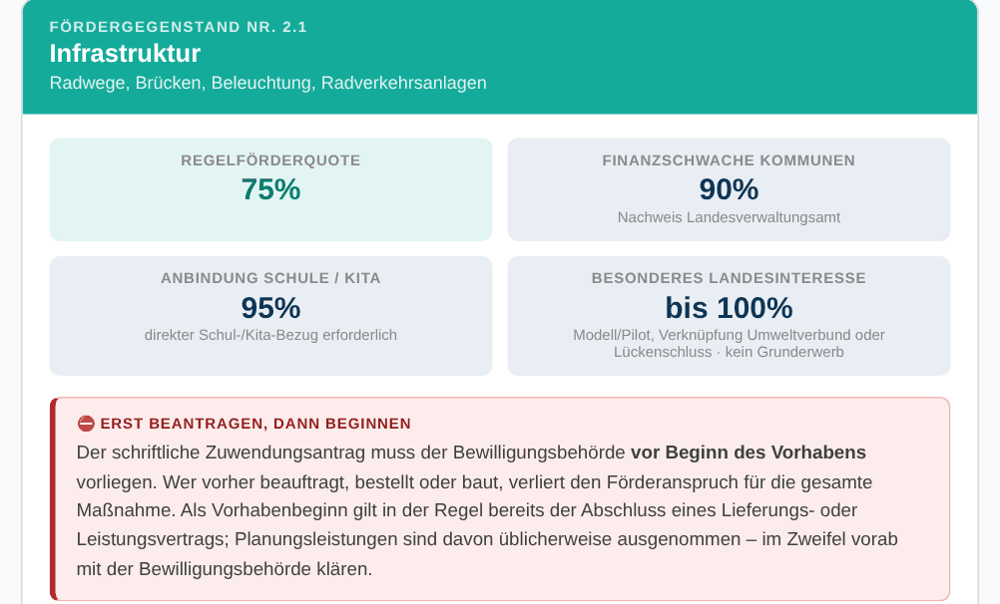
-
Vermerk kopieren
Am Ende der Seite steht der Ergebnis-Vermerk für E-Mail oder Akte.


Vergabe-Assistent Saarland
Für die Frage, wie ein Auftrag vergeben werden darf: Aus Leistungsart und Auftragswert bestimmt das Werkzeug das einfachste zulässige Verfahren.
-
Leistungsart wählen
Bau, Lieferung und Dienstleistung oder freiberufliche Leistung. Im Beispiel: „Bau“.
-
Auftragswert netto eingeben
Tippen Sie den geschätzten Wert ein oder wählen Sie einen der Schnellwerte. Alle Lose und Teilaufträge desselben Vorhabens zählen zusammen. Im Beispiel: 50.000 €.
-
Ergebnis lesen
Das Ergebnis erscheint sofort unter der Eingabe: das Verfahren, die Pflichtschritte zum Abhaken, Empfehlungen, eine Vorlage für den Vergabevermerk und die Rechtsgrundlagen.
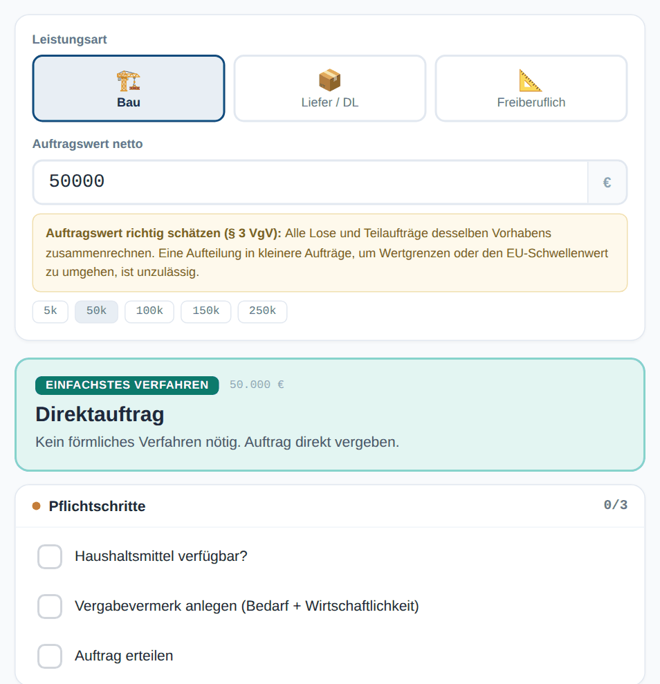